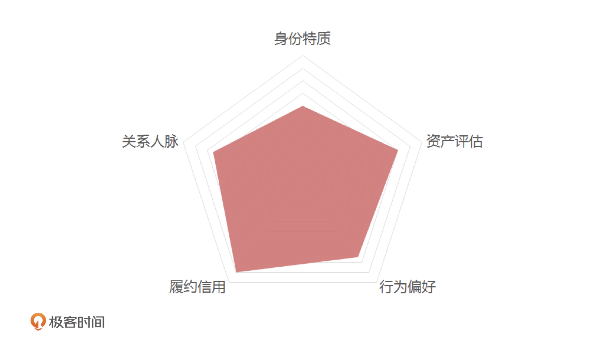
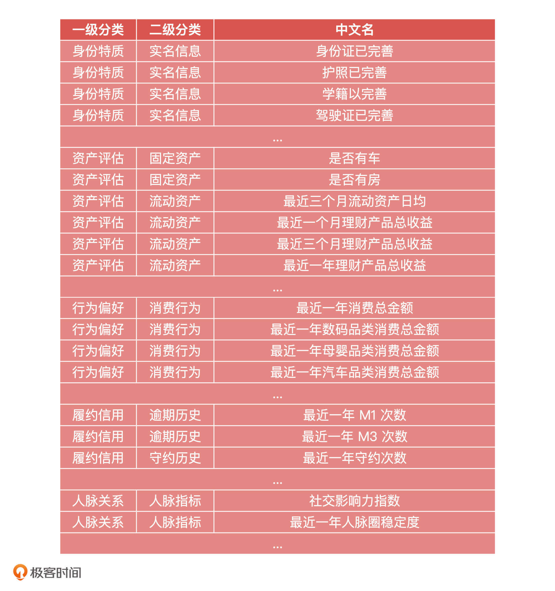
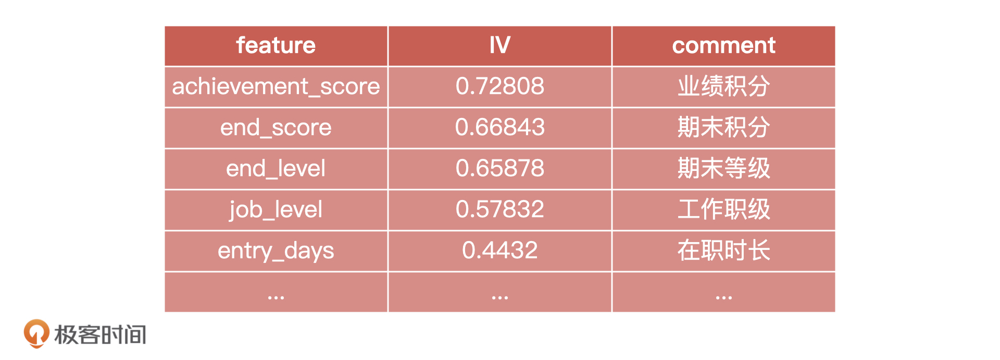
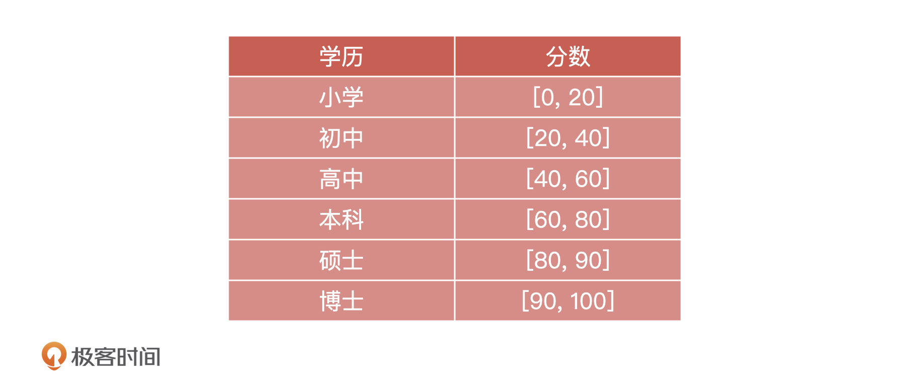
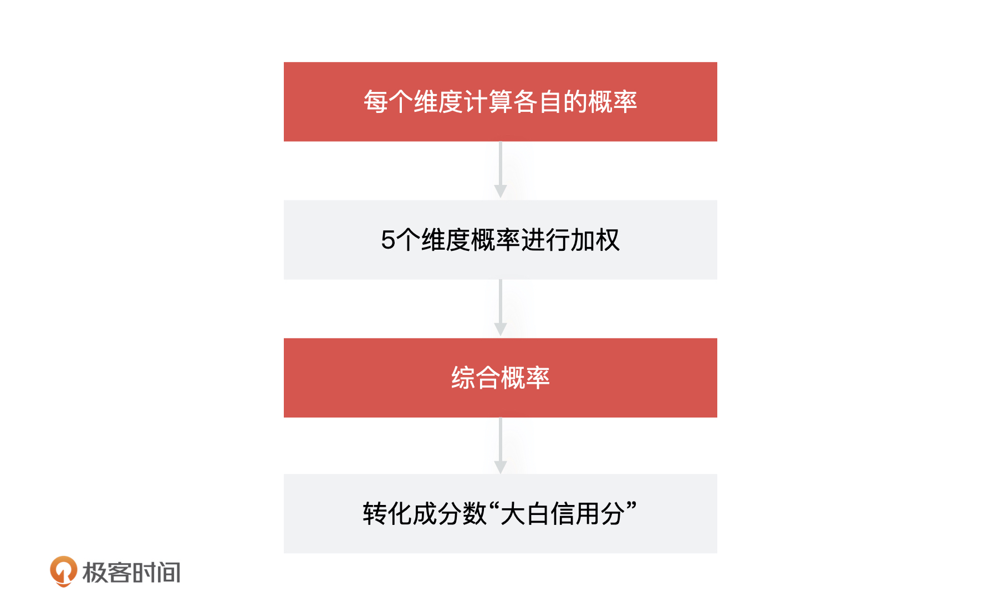
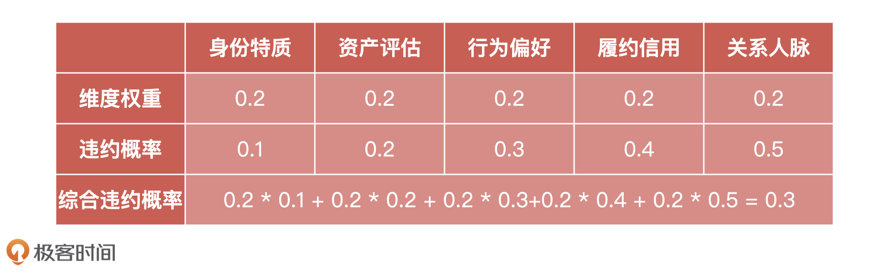
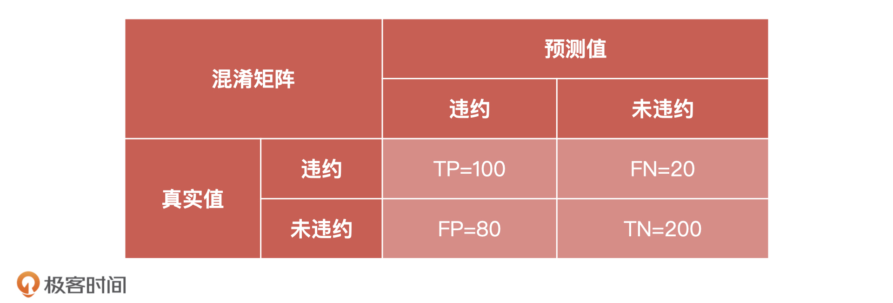
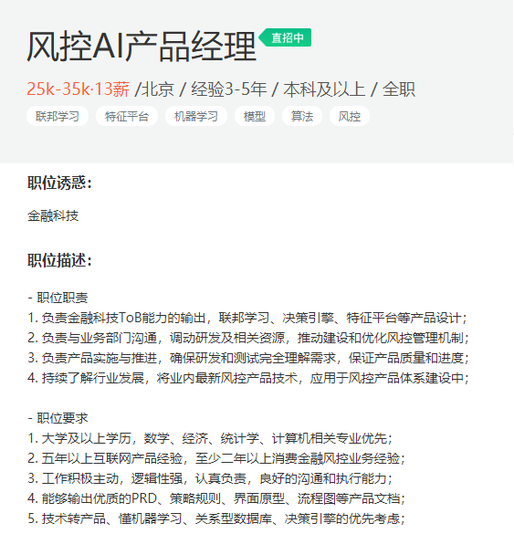
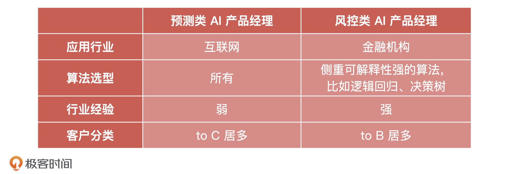

- 00 开篇词 你好，产品经理！你的未来价值壁垒在哪儿？.md.html
- 01 行业视角：产品经理眼中的人工智能.md.html
- 02 个人视角：成为AI产品经理，要先搞定这两个问题.md.html
- 03 技术视角：AI产品经理需要懂的技术全景图.md.html
- 04 过来人讲：成为AI产品经理的两条路径.md.html
- 05 通过一个 AI 产品的落地，掌握产品经理工作全流程.md.html
- 06 AI 模型的构建过程是怎样的？（上）.md.html
- 07 AI模型的构建过程是怎样的（下）.md.html
- 08 算法全景图：AI产品经理必须要懂的算法有哪些？.md.html
- 09 K近邻算法：机器学习入门必学算法.md.html
- 10 线性回归：教你预测，投放多少广告带来的收益最大.md.html
- 11 逻辑回归：如何预测用户是否会购买商品？.md.html
- 12 朴素贝叶斯：让AI告诉你，航班延误险该不该买？.md.html
- 13 决策树与随机森林：如何预测用户会不会违约？.md.html
- 14 支持向量机：怎么预测股票市场的涨与跌？.md.html
- 15 K-means 聚类算法：如何挖掘高价值用户？.md.html
- 16 深度学习：当今最火的机器学习技术，你一定要知道.md.html
- 17 模型评估：从一个失控的项目看优秀的产品经理如何评估AI模型？.md.html
- 18 核心技能：产品经理评估模型需要关注哪些指标？.md.html
- 19 模型性能评估（一）：从信用评分产品看什么是混淆矩阵？.md.html
- 20 模型性能评估（二）：从信用评分产品看什么是KS、AUC？.md.html
- 21 模型性能评估（三）：从股价预测产品看回归算法常用的评估指标.md.html
- 22 模型稳定性评估：如何用PSI来评估信用评分产品的稳定性？.md.html
- 23 模型监控：产品经理如何建设算法模型监控指标体系？.md.html
- 24 推荐类产品（一）：推荐系统产品经理的工作职责与必备技能.md.html
- 25 推荐类产品（二）：从0打造电商个性化推荐系统产品.md.html
- 26 预测类产品（一）：用户复购意向预测的底层逻辑是什么？.md.html
- 27 预测类产品（二）：从0打造一款预测用户复购意向的产品.md.html
- 28 预测类产品（三）：从0打造一款“大白信用评分产品”.md.html
- 29 自然语言处理产品：从0打造一款智能客服产品.md.html
- 30 AI产品经理，你该如何提升自己的价值？.md.html
- 31 AI产品经理面试，这些问题你必须会答！.md.html
- 春节加餐1 用户增长模型：怎么利用AI技术判断新渠道性价比？.md.html
- 春节加餐2 一次答疑，带你回顾模型评估的所有基础概念.md.html
- 期中周测试题 ，你做对了吗？.md.html
- 期中答疑 AI产品经理热门问题答疑合集.md.html
- 结束语 唯一不变的，就是变化本身！.md.html
- 捐赠
28 预测类产品（三）：从0打造一款“大白信用评分产品”
你好，我是海丰。今天，我们接着来讲预测类产品的打造。我会以小白信用评分产品为例，来教你模拟构建一个大白信用评分产品，从而学习到机器学习在互联网金融行业的产品落地方法。
什么是小白信用评分产品呢？你可以看我下面给出的解释：
小白信用评分：指根据用户在京东的浏览、购物、投资理财、信用产品使用和履约情况、个人信息完整度等多个维度的数据，通过大数据算法，对用户的信用水平给出的综合评估的产品。评分越高表明用户的信用越好，受评用户就可以在京东及京东合作商户享受优惠商业政策。
需要提前声明的是，构建“大白信用产品”的过程中，我们不会涉及任何与小白信用产品相关的内容，你只要学会构建的通用流程就可以了。整个构建流程可以分为四部分，分别是案例背景、特征构建、模型训练和模型评估。下面，我们就详细来说说。
案例背景
开头说了，我们要设计一个大白信用评分模型，那这个模型具体长什么样呢？一个标准的“大白信用模型”由五大维度构成，如下图所示。

第一是身份特质，包括你的实名情况、社会属性、居住环境、教育情况，它们代表了你的出身、社会层次和稳定性，是一个人短时间内不会被改变的特质。
第二是资产评估：通过你提交的收入和资产信息来综合判断你的履约能力，包括社保、公积金、动产和不动产等。
第三是行为偏好：就是通过你的消费、缴费还款、公益活动等行为，判断你的行为特点，比如从消费偏好上看出你消费的高低。这部分数据对产品后续决策有很大的参考价值。
第四是履约信用：评估你在金融产品、电商平台和社会行为表现出来的履约和违约情况，比如看你历史的信用，来判断你的诚信度。
第五是人脉关系：这一步主要是对你的社交关系，人脉丰富程度进行评估。
通过这五个维度，我们除了能够判断一个人的信用到底好不好，还可以结合人的行为偏好来做更精准的个性化推荐。
在建模之前，我们先假设一个信用场景，比如通过“大白信用分”来决定用户是否可以免押金租相机。这个场景就是一个二分类问题。它的核心思路是，计算出用户在“大白信用”5 个维度上的违约概率，然后把它们综合起来计算出一个最终概率，再把它转化成一个实际的得分，也就是这个用户最终的“大白信用分”。
特征构建
接下来，我们就可以从刚才说的五大维度入手，来做“大白信用”评分模型的数据准备了。在做数据准备的时候，这 5 大维度还可以继续拆分成更多详细的分类和数据字段。比如“资产评估”就可以拆分成“固定资产”和“流动资产”等等，示例如下：

当然，在实际工作中，对于产品级数据模型构建来说，上面的数据信息还远远不够，我们还需要增加更多的原始数据和扩展数据。
原始数据就是存储在业务系统中的基础字段，比如日交易额、下单量、点击或搜索次数等原始字段信息。扩展数据是原始数据加工转化后的数据，一般有三种生成方式：按照时间维度衍生，如最近 1 个月或者 3 个月交易额；通过函数衍生，如最大或最小交易额，以及交易额方差；通过比率衍生，如“最近 1 个月交易额/最近 3 个月交易额”。
下一步就是对这些特征数据进行处理了。
在真实工作中，特征处理和选择是一个循环迭代、优化的过程，所以在业务前期，我们要尽可能多地抽取数据特征。特征处理的方法可以分为三种，分别是特征的通用处理，数值型特征处理和字符串特征处理。
特征的通用处理
特征的通用处理是我们在拿到特征数据之后都需要做的，包括数据分布分析、缺失值处理与异常值校验。
首先是特征数据的分布分析，我们要先通过数据可视化的方式查看数据的分布情况，然后对分布不均衡的数据采用“随机欠采样”、“随机过采样”或 “SMOTE 算法”进行处理。这和我们上节课讲的一样，我就不再重复了。
其次，对“大白信用评分产品”中的数值型和字符串型字段进行缺失值和异常值检验，我们可以采用补充缺失值、或者直接剔除掉无效字段的方式进行处理。
数值型特征处理
对于数值型特征的处理，我们主要是看特征的 IV 值，因为 IV 值衡量了各特征对\(y\)值的预测能力。例如，下面是我们对员工工作信息模型的特征相关性排序。

需要注意的是，IV 值并不是越大越好。根据不同场景 IV 值的取值有所不同，实际的场景中，我们可以选择 IV 值大于 0.1 的指标。
除此之外，我们还要对特征进行归一化处理，来消除数据特征之间的量纲影响，让不同指标之间具有可比性。比如交易额和交易次数，这两个指标就没有可比性。我们通常使用的归一化方法有线性函数归一化和零均值归一化。
线性函数归一化也称为最大值 - 最小值归一化，原理是将数据映射到 [0, 1] 的范围内，公式为：\(x' = \\frac{X - X\_{min}}{X\_{max} - X\_{min}}\)。
零均值归一化的原理是将数据映射到均值为 0，标准差为 1 的分布上，公式为：\(x' = \\frac{x - \\bar{X}}{S}\)。
字符串特征处理
对于字符串特征的处理主要就是对字符串做离散化，也就是将字符串映射到一个个离散的区间中。字符串离散化的目的是将变量数值化，因为数值化后的变量才能应用到数学模型中。
以“身份特质”为例，如果你的学历是硕士，那么我们该如何处理这个字段呢？

如表格所示，我们把100分分成6段，小学是 0～20，初中是 20～40，高中是 40~60，以此类推，我们直接把字符串映射到一个个的分段区间中就可以了。这里的具体取值按照业务常识设置的，我们只要做到逻辑上没有问题就行了。
模型训练
处理完数据，我们就要开始训练模型了。不过在那之前，我们要先选择算法。因为这是一个二分类问题，所以我们要选择二分类算法，又因为现在是项目前期，所以我们可以选择相对简单的算法模型进行实验，比如逻辑回归模型。接下来，我们就可以按照如下步骤进行操作了 。

我们以“履约信用”维度为例，假设“履约信用”包含的字段有最近一个月需还款金额 \(x\_{1}\)，最近一个月逾期金额\(x\_{2}\)，最近一个月消费金额 \(x\_{3}\)。根据 LR 公式，我们可以计算得到你违约的概率：\(P = sigmod(y) = \\frac{1}{1 + e^{-y}} = \\frac{1}{1 + e^{-(ax\_{1} + bx\_{2} + cx\_{3}))}}\)。
其中，\(P\)为用户违约的概率，\(a\)、\(b\)、\(c\)为逻辑回归模型的拟合系数。
通过这个方法，我们依次计算出 5 个维度（身份特质、资产评估、行为偏好、履约信用、关系人脉）的概率，分别为 0.1、0.2、0.3、0.4、0.5。然后，我们再假设每个维度的权重都为 0.2，具体如下表所示：

最后，我们还需要将综合概率\(P\)转化为实际的数值，转化公式为：\(score=(1-P) \\times A+B\)
其中，分数区间为 [200, 1000]，所以 A=800，B=200，然后我们再将上面的综合违约概率带入公式，就能得到你最后的大白信用分了，它等于760。
当然，真实产品的模型构建过程肯定更为复杂，但它们的核心思想是一致的，都是先划分维度，然后准备每一个维度的数据特征，对它们进行特征处理，构建好训练集和测试集，通过分类算法计算每一个维度的概率分，再通过加权的方式得出综合概率分，最终转化成具体的分数，这就是最终的信用得分了。
模型评估
得到预测结果之后，我们要对模型进行抽样评估。对于信用评分模型，我们只需关注两个重要的指标：混淆矩阵和 KS 值。
比如说，在得到的预测结果中，60分为切分点，60以下我们认为会违约，60分以上我们认为不会违约，我们预测可能会违约的是180人，不会违约的是220。但在实际表现上，违约有 120 人，未违约有 280 人，相应的混淆矩阵如下：

这样我们就能计算出模型的准确率和召回率了：
- 模型的准确率的计算是：\(\\frac{TP+TN}{TP+TN+FP+FN}=\\frac{100 + 200}{100 + 20 + 80 + 200} =0. 75\)
- 模型的召回率的计算是：\(\\frac{TP}{TP+FN} = \\frac{100}{100 + 20} = 0.83\)
从结果上来看，模型的效果还是不错的。
相应的，我们还可以将10分、20分、30分这些分数分别作为切分点，得到一系列的混淆矩阵和对应的准确率和召回率，以及TPR和FPR。我们把每一个切分点所对应的TPR和FPR相减，得到的最大值就是这个模型的KS值。
KS的具体计算过程，你可以参考第20讲，这里我就不多说了。不过，最终KS值可以直接通过算法工程师的代码跑出来，不需要我们手工计算。
小结
这节课，我们一起打造了一个“大白信用评分产品”。还是和前几节课一样，想要成为金融风控方面的产品经理，你要从能力、技术和岗位这三方面进行准备。
在能力方面，金融行业的数据比较成熟，所以数据来源很多，这就要求产品经理对于数据源的成熟度和稳定性有把控能力。并且，如果我们想在项目前期尽快赢得客户认可，还要具备良好的沟通能力和快速的反馈能力。因此，相比于数据分析师这样的岗位，我们要注意锻炼自己能够站在产品、公司以及客户这三方角度来分析问题，提出自己的想法。
在技术方面，我们要理解机器学习算法模型。更具体点来说，你要理解逻辑回归、决策树、GBDT、随机森林、神经网络这些常用算法的原理、应用场景和优缺点，具体的内容你可以回顾算法技术能力篇。
在岗位方面，因为互联网金融的核心是风控，而风控领域的产品经理岗位，又可以细分为风控策略产品、系统产品，随着 AI 能力的普及，又有了风控 AI 产品经理等等岗位。如下是一张风控AI产品经理的JD，你可以看一看。

并且，我也把这节课和上节课产品经理岗位之间的区别总结在下表中，希望你能更直观地理解。

课后讨论
在这里，我想请你谈一谈你对“芝麻信用分”和“小白信用分”的理解，他们的分数的取值范围分别是多少，为什么这样设定？
期待在留言区看到你的思考，我们下节课见！
© 2019 - 2023 Liangliang Lee. Powered by gin and hexo-theme-book.